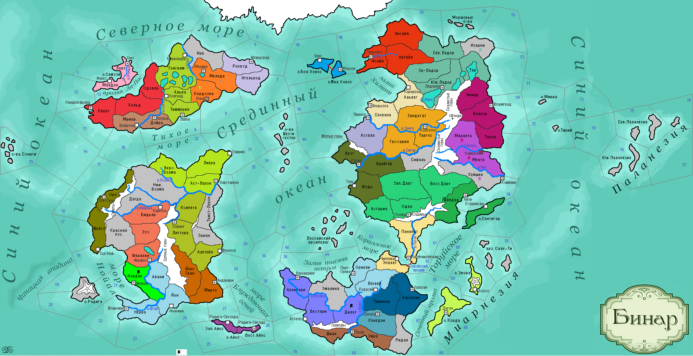

<==
| 8 |
| 9 |
| 10 |
| 11 |
| 12 |
| 13 |
| 14 |
| 15 |
| 16 |
==>
Латифундия
Античные способы хозяйствования были не до конца забыты в средние века Бинара. Появилась идея возрождения Латифундии - индустриального сельскохозяйственного предприятия, основанного на рабском труде. [вводится уникальная постройка Латифундия. Может быть построена в провинции. Даёт +5 п/п, +10д в ход. Для работы требуются Рабы. Стоимость стр-ва: 50д]

12-й ход истории мира Бинар (1155 г.)
· Войска Сирина Синебородого захватывают столицу Синарала, г.Камеата.
· Союз языческих государств Феллерда и Фриулеса объявляет войну «мерзким приверженцам культа Мортиса, пустившими корни на континенте». Противниками становятся Форзерд и Роквудский Пакт. Войска Феллерда захватывают Кордуэну.
· Вейнарские жрецы вводят почитание тотемов у адептов языческих верований.
· Игос I – новый герцог Загорры.
· Лори-ойя становится новой княгиней Муад’огской.
· Дилат захвачен племенами Эмалины!
· Силы Фриулеса берут беззащитный г.Корд и подводят силы к столице врага – г.Морферу.
· Князь Орнели Реа Коварный почил в бозе… Наследником становится младший, любимый сын Гамал.
· Йонтари и Эомер заключают оборонительный союз.
· Раздосадованный поражением в войне против Штартизи, народ Кордавы начинает гражданскую войну!
· Герцогу Шолштари I во сне приснился Бог Солнца Анду в виде всадника с копьём и круглым золотым щитом и повелел, чтобы отныне его народ поклонялся ему. В стране Йонтари в 1155 г. была основана религия Андуизм. В честь этого события в г.Андакири строится Храм Богу Анду. (Ульнар)
· Рерцер III принимает власть в Форзерде.
· Розанна I – принсипесса Западного и Восточного Айоса.
· Войска Ладориана освобождают провинцию Тар и, мстя северным варварам, захватывают земли Изарни.
· Астерлия становится феодальным герцогством. «Мы грабим не Море, а тех, кто его грабит» -гласит народная пословица лиерийцев, оправдывающая их пристрастие к пиратскому промыслу.
· Основаны новые города: Йонкири (Штартизи), Велертон (Фриулес)